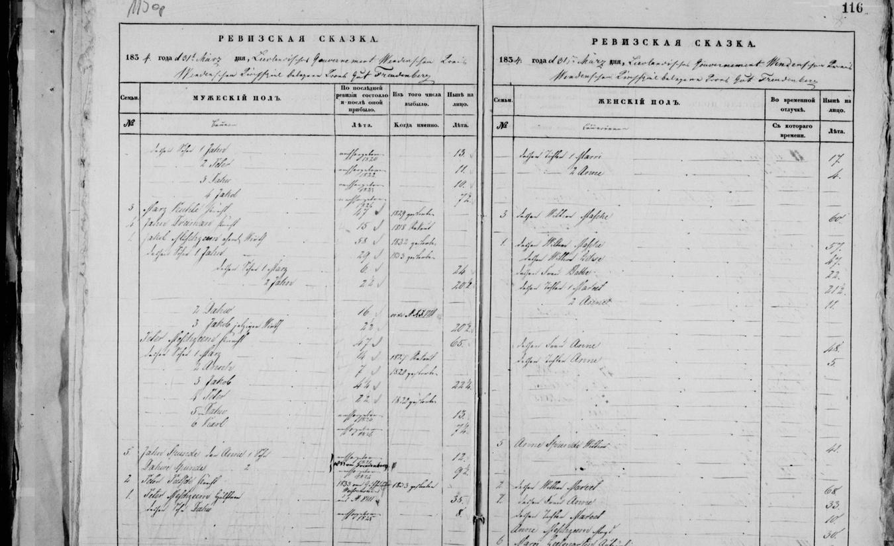

Anna Mežciema b. 1819
Peter's 3× great-grandmother.
Also recorded as Anne Gibboy; Anne Meschzeem (1847 marriage); Bittes Anna Meschzeem (1847 duplicate register); Anne ihre 2te Tochter (1826 revision); Anna Mežciems (married name Ģibols).
Anna Mežciema was born in 1819 in Priekuļi, Cēsis district, Vidzeme, Latvia (according to an online family tree)2, the daughter of Ancis Āboltiņš and Dārta Āboltiņa3,4. She married Mārcis Gibboy in Oct 1847 in Priekuļi, Cēsis district, Vidzeme, Latvia (according to an online family tree)11. She has died (according to an online family tree)10, but the date of death is not yet documented.
Family
- Parents
- Ancis Āboltiņš b. 1839 and Dārta Āboltiņa b. 1855 documented
- Husband
- Mārcis Gibboy b. 1807 · married in Oct 1847 in Priekuļi, Cēsis district, Vidzeme, Latvia
- Children
- Marija Gibboja 1853–1925 documented
- Mārcis 1848–1853 documented
- Kristīne Gibboy b. 1856 documented
Life events
| Event | Date | Place and details |
|---|---|---|
| Born | 1819 | Priekuļi, Cēsis district, Vidzeme, Latvia According to an online family tree2 |
| Lived | 1826 | Priekuļi, Cēsis district, Vidzeme, Latvia3 |
| Lived | 12 Apr 1834 | Priekuļi, Cēsis district, Vidzeme, Latvia Old Style (Julian) date: 31 Mar 18344 |
| Lived | 25 Sep 1850 | Priekuļi, Cēsis district, Vidzeme, Latvia Old Style (Julian) date: 13 Sep 18505,6 |
| Lived | 18 Aug 1853 | Kalna-Podis farm, Priekuļi, Cēsis district, Vidzeme, Latvia7 |
| Lived | 5 Dec 1857 | Rauguļi farm, Priekuļi, Cēsis district, Vidzeme, Latvia Old Style (Julian) date: 23 Nov 18578,9 |
| Died | not yet documented | According to an online family tree10 |
Records





Open questions
- Kristīne Gibboy (b. c. 1855), Marija's sister, and Kristīne Karnīte née Gibboy (godmother 1883, mother 1888) Probably
- Marija Ģibols's mother Anne (b. c. 1822): born Mežciems (Meschzeem) Confirmed
- Marija Ģibols's parents Mārcis and Anne: Mārcis b. c. 1807 × Anna b. c. 1819 (the 1857 revision), not Raimonds's Mārcis b. 1816 × Anna Balodis Confirmed
Sources
- MyHeritage family tree 'Dzimta' of Peter's third cousin (his family site), member GEDCOM export of 26 Oct 2026, I500600 (person-6500600), GEDCOM lines 17695–17707.
NAME Anna /Mežciems/ · _MARNM Ģibols
- MyHeritage family tree 'Dzimta' of Peter's third cousin (his family site), member GEDCOM export of 26 Oct 2026, I500600 (person-6500600), GEDCOM lines 17695–17707.
BIRT · 1819 · Priekuļi
- Priekuļi (Freudenberg) surname revision 1826, No. 1 Meschzeem (surname XIV Meschzeem), LVVA f. 199, apr. 1, l. 112, image 54 (ff. 49v–50r), LVVA f. 199, apr. 1, l. 112, image 54.
XIV Meschzeem | Jacob Jahns Sohn Wirth | 58 | — | 68 / XIV Meschzeem | Jahn des Jacobs 1te Sohn | 30 | — | 40 / Marz des Jahns 1te Sohn | 6 | — | 16 / Jahn ,, 2te Sohn | 2½ | — | 12½ ‖ XIV Meschzeem | Masche deßen Weib | 50 / XIV Meschzeem | Liese deßen Weib | 40 / Mareet ihre 1te Tochter | 14½ / Anne ihre 2te Tochter | 4
Translation: Surname XIV Meschzeem: Jacob, Jahn's son, farmer, 58 -> 68; his wife Masche, 50. Jahn, Jacob's 1st son, 30 -> 40; his wife Liese, 40; Jahn's 1st son Marz, 6 -> 16; 2nd son Jahn, 2½ -> 12½; their 1st daughter Mareet, 14½; their 2nd daughter Anne, 4.
Priekuļi (Freudenberg) 1826 surname revision (LVVA f. 199, apr. 1, l. 112, image 54, ff. 49v–50r), farm 1. Meschzeem, surname No. XIV Meschzeem (second farmer's household): farmer Jacob, Jahn's son ('Jacob Jahns Sohn Wirth'), age 58 in 1816, now 68 (b. c. 1758), and his wife Masche, age 50 (b. c. 1776); Jacob's 1st son Jahn ('Jahn des Jacobs 1te Sohn'), age 30 in 1816, now 40 (b. c. 1786), and his wife Liese, age 40 (b. c. 1786); their sons 1. Marz (6 -> 16) and 2. Jahn (2½ -> 12½); their daughters 1. Mareet (14½) and 2. Anne ('Anne ihre 2te Tochter'), age 4 in 1826 (born c. 1822). Also listed are Jacob's 2nd son Dawe (16 in 1816, 's. in No 10'), 4th son Jacob (2½ -> 12½), daughters Juhle (17) and Masche (15), and farmer's brother Peter, Jahn's son ('Peter, Jahns Sohn Wirthsbruder', 47 -> 57; wife Anne, 41).
- Priekuļi (Freudenberg) soul revision 1834, I. Meschzeem, family 1, LVVA f. 199, apr. 1, l. 112, image 117 (ff. 115v–116r), LVVA f. 199, apr. 1, l. 112, image 117.
1. | Jakob Meschzeem ehemals Wirth | 58 | 1832 gestorben | — / dessen Sohn 1 Jahn | 29 | 1833 gestorben | — / dessen Söhne 1 Marz | 6 | — | 24 / 2 Jahn | 2½ | — | 20½ / 2 Dawe | 16 | vide N XXVIII | — / 3 Jakob jetziger Wirth | 2½ | — | 20½ ‖ 1 | dessen Wittwe Masche | 57 / dessen Wittwe Lihse | 47 / dessen Frau Babbe | 22 / dessen Töchter 1 Mareet | 21½ / 2 Anne | 11
Translation: Family 1: Jakob Meschzeem, former farmer, 58 [in 1816], died in 1832; his widow Masche, 57. His 1st son Jahn, 29 [in 1816], died in 1833; his widow Lihse, 47. His [Jahn's] sons: 1. Marz, 6 -> 24 (his wife Babbe, 22); 2. Jahn, 2½ -> 20½; his [Jahn's] daughters: 1. Mareet, 21½; 2. Anne, 11. [Jakob Sr.'s sons:] 2. Dawe, 16, see No. XXVIII; 3. Jakob, current farmer, 2½ -> 20½.
Priekuļi (Freudenberg) 8th soul revision, dated 31 March 1834 O.S. (= 12 April 1834 N.S., LVVA f. 199, apr. 1, l. 112, image 117, ff. 115v–116r), farm I. Meschzeem, family no. 1: former farmer Jakob Meschzeem ('Jakob Meschzeem ehemals Wirth'), age 58 in 1816, died in 1832 ('1832 gestorben'), leaving widow Masche, age 57; his 1st son Jahn ('dessen Sohn 1 Jahn'), age 29 in 1816, died in 1833 ('1833 gestorben'), leaving widow Lihse, age 47; Jahn's sons 1. Marz (6 -> 24; wife Babbe, 22) and 2. Jahn (2½ -> 20½); Jahn's daughters 1. Mareet (21½) and 2. Anne (11, born c. 1822/23). Jakob's 3rd son Jakob (2½ -> 20½) is now the current farmer ('3 Jakob jetziger Wirth').
- Priekuļi (Freudenberg) soul revision 1850, family 10 (Marz Gibboi), LVVA f. 199, apr. 1, l. 112, image 291 (pp. 295v–296), LVVA f. 199, apr. 1, l. 112, image 291.
10. | Marz Gibboi, Knecht[?] | aus No. XVI | 43. / dessen Sohn Marz | 1849 nachgeboren | 1½. ‖ 10. | dessen Frau Anne Gibboi | 31.
Translation: Family 10: Mārcis Gibboi, farmhand[?], from farm XVI, 43; his son Mārcis, born 1849, 1½. His wife Anne Gibboi, 31.
1850 soul revision, family 10: Marz Gibboi, Knecht[?], 'aus No. XVI' (from the Podiņi farm), 43; his son Marz, born 1849, 1½; his wife Anne Gibboi, 31. The farm is not named on this frame; the 1857 list puts him at no. XIV (Luste) in 1850.
- MyHeritage family tree 'Dzimta' of Peter's third cousin (his family site), member GEDCOM export of 26 Oct 2026, I500600 (person-6500600), GEDCOM lines 17695–17707.
1850.gadā Mārcis (43) ar sievu Annu (31) un dēlu Mārci (1 1/2) dzīvo IV Lustes mājās
His note (on her husband Mārcis, I500599) on the 1850 soul revision, http://lvva-raduraksti.lv/lv/menu/lv/13/ig/14/ie/5962/book/32503.html, frame 291.
- Baptism of Marie Gibboij, 1853 no. 149, Freudenberg K. Pohdis.
[August] — sechsten Morg. 8 Uhr | — sechzehnten | 149. Freudenberg K. Pohdis. Marie Gibboij. Lett. Kn. Mahrzis Gibboij u. s. W. Anne, luth.
Lived at the Kalna-Podis farm ('Freudenberg K. Pohdis') on the Priekuļi estate with her husband Mārcis Gibboy when their daughter Marie was born there on 6/18 August 1853.
- Priekuļi (Freudenberg) soul revision 1857, Rauguļi farm, family 10/58 (Marz Gibboi), LVVA f. 77, apr. 14, l. 344, image 16 (pp. 11v–12), LVVA f. 77, apr. 14, l. 344, image 16.
10. | 58. | Marz Gibboi | aus No. XIV. | 50. ‖ 10. | 58. | dessen Frau Anne | 38. / Töchter 1. Marri | 4. / 2. Christine | 2.
Translation: Family 10 (9th rev.) / 58 (10th rev.): Mārcis Gibboi, from farm no. XIV [at the last revision], now 50. His wife Anne, 38; daughters 1. Marija, 4; 2. Kristīne, 2.
1857 soul revision, family 10/58: Marz Gibboi, at the last revision 'aus No. XIV' (from the Luste farm), now 50; his wife Anne 38; daughters 1. Marri 4 and 2. Christine 2.
- MyHeritage family tree 'Dzimta' of Peter's third cousin (his family site), member GEDCOM export of 26 Oct 2026, I500600 (person-6500600), GEDCOM lines 17695–17707.
1857.gadā Mārcis (50) ar sievu Annu (38) un meitām Mariju (4) Kristīni (2) dzīvo Rauguļu mājās VI, Priekuļos
His note (on her husband Mārcis, I500599) on the 1857 soul revision of Priekuļi, http://lvva-raduraksti.lv/lv/menu/lv/13/ig/14/ie/5962/book/33313.html, frame 16.
- MyHeritage family tree 'Dzimta' of Peter's third cousin (his family site), member GEDCOM export of 26 Oct 2026, I500600 (person-6500600), GEDCOM lines 17695–17707.
DEAT · Y (marked deceased; no date or place)
- MyHeritage family tree 'Dzimta' of Peter's third cousin (his family site), member GEDCOM export of 26 Oct 2026, family F500231 (I500599 Mārcis Gibboy × I500600 Anne Gibboy).
MARR 1847. Okt Priekuļi